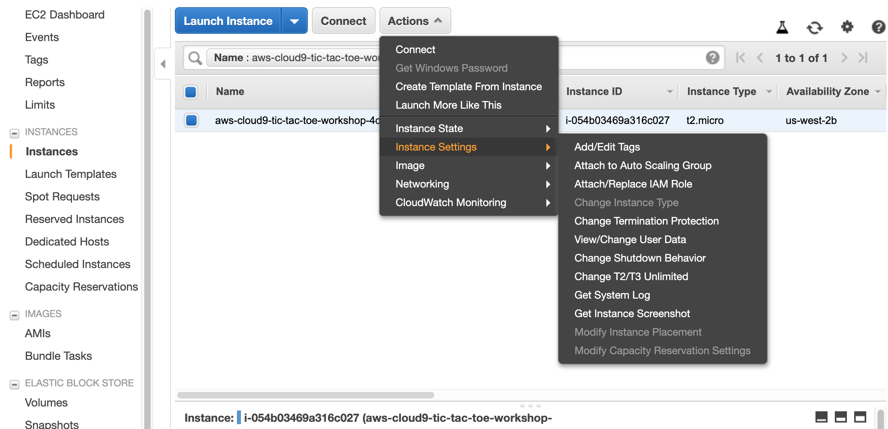
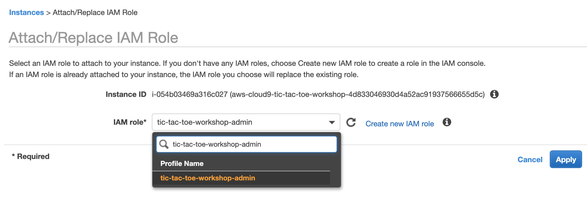

AWS-Logo_White-Color
워크샵 시쟉하기
AWS 계정 생성
워크샵 생성
필요한 툴 설치하기
워크샵을 위한 IAM 역할 만들기
워크샵에 IAM 역활 연결하기
IAM 셋팅 업데이트
SSH 키 생성하기
컨테이너로 데디 서버 운영하기
ECS 클러스터 생성
ECS EC2를 위한 IAM 역할 만들기
ECS 클러스터 생성하기
보안그룹 수정
ECR 구성
첫번째 리포지토리 만들기
나머지 리포지토리 만들기
컨테이너로 묶어서 올리기
프로젝트 알아보기
ALB 구성
VPC 이름 변경
매치메이커 타겟 그룹 만들기
대시보드 타겟 그룹 만들기
ALB 만들기
작업 정의 구성
ECS 작업을 위한 IAM 역할 만들기
매치 메이킹 작업 정의
게임 서버 작업 정의
게임 클라이언트 작업 정의
대시보드 작업 정의
대시보드 컨테이너 업데이트
클라우드맵 구성
VPC 이름 변경
타겟 그룹 만들기
클라우드 맵 만들기
서비스 구성
대시보드 서비스 만들기
클라이언트 서비스 만들기
매치메이커 서비스 만들기
서비스 확인
데디 서버 운영 테스트
서버 준비 하기
게임 서버를 파게이트로 띄우기
게임 실행 하기
개선 사항
Cleanup
Edit this page
Amazon EKS Wo
>
워크샵 시쟉하기
> 워크샵에 IAM 역활 연결하기
워크샵에 IAM 역활 연결하기
다음 링크를 누르세요
Cloud9 EC2 instance 화면
인스턴스를 선택하고, 다음을 선택합니다.
Actions / Instance Settings / Attach/Replace IAM Role

IAM Role
항목을
tic-tac-toe-workshop-admin
로 선택하고,
Apply
를 선택합니다. 